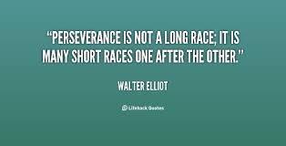

INTRODUCTION TO THE SITE
WHAT IS IN THE SITE???
I am Krishna Chaitanya Pappu.This is the first web-site which I am designing in the first semister of my Engineering.This website is about myself and it is a confluence of reality and fiction.I liked the path to making of this as I learnt many things on the net during the process.I am weak at self-learning,but I have observed that recently I have picked upon it. NOTE: I have not learnt server-side so the form's will not be processed but,I have included them to practice it.Once I learn php and others,theese will be useful.
I am of the opinion that in the coming days the visual informatics is what is going to play a crucial role than text on computers as it communiates to a broader range of people.So,I have tried in this site to represent by images.
MAKING OF THIS: THE LEARNING CURVE!!!
I am fairly new to professional usage of a computer and I see a lot of change in the way I used it earlier to the way I use it now. I am adapting a lot to the self-learning, which I see is very important for graduation level of studies.The website has a very basic description of various categories.I have not tried to go in depth of any topic,rather I am trying to keep things simple and non-boring for the reader.
 I would also like to share a nice qoute about one of the qualities,which I really long to cultivate and stickby.PERSEVERANCE This quality I feel is what separates the ones who succeed to those who miss the target,even if they have the technical capabilities.I feel that althought the technical expertise is a major factor,inspite of having it,if you dont have some of the qualities like this then it is tough to get through with your work well.I will try to pick it up during my B.Tech.
Another thing that have understood during the process is that practicals play a very important role in the learning and that I will have to lay equal importance to the practicals.At this level especially(B.Tech),it becomes quintessential to have a meticulous knowledge in the practical realm.In this project,I have started off with learning and I also started practice simultaniously by practicing what I learnt.I gave very less time for the making of the Project itself,which is a lesson to be learnt for the future.All in all,I am very happy about this assignment.
GREEN ALL THE WAY
I personally like the color green very much and the sea-blue takes the next position.So,any picture that really bring out color green cathces my eye and it may be a part of this assignment at many places.I am also very happy to see greenery and I feel that IIIT-H has done a great job in maintaining the campus with greenery in and around the place.It gives a sense of peace to be in a place full of trees and abundantly green.
REFERENCES
During the course of this assignment I have taken a lot of help from www.w3schools.com .I have taken help of the teaching slides of Prof.Sunil Mohan and also the tutuorial pages of the website I have mentioned earlier.I have got some practice from that site on respective topics of discussion and I found that it was of great help in grasping the topics.